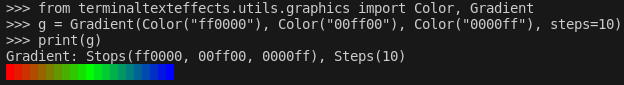

Gradient
Module: terminaltexteffects.utils.graphics
Basic Usage
from terminaltexteffects.utils.graphics import Gradient, Color
rgb = Gradient(Color("#ff0000"), Color("#00ff00"), Color("#0000ff"), steps=5)
for color in rgb:
# color is a hex string
...
Printing Gradients
Gradients can be printed to the terminal to show information about the stops, steps, and resulting spectrum.

Gradient Reference
A Gradient is a list of RGB hex color strings transitioning from one color to another.
The gradient color list is calculated using linear interpolation based on the provided start and end colors and the number of steps. Gradients can be iterated over to get the next color in the gradient color list. If there is only one color in the stops list, the gradient will be a list of the same color.
If multiple steps are given, the gradient between pairs of colors will be equal to the number of steps for the pair based on the order of stops and steps.
Ex: stops = ("ffffff", "aaaaaa", "000000"), steps = (6, 3)
"fffffff" -> (6 steps) -> "aaaaaa" -> (3 steps) -> "000000"
The step count includes the stop for each pair. Total number of colors in the resulting gradient spectrum is the sum of the steps between each pair of stops plus 1.
Attributes:
| Name | Type | Description |
|---|---|---|
spectrum |
list[str]
|
List (length=sum(steps) + 1) of RGB hex color strings |
Source code in terminaltexteffects/utils/graphics.py
164 165 166 167 168 169 170 171 172 173 174 175 176 177 178 179 180 181 182 183 184 185 186 187 188 189 190 191 192 193 194 195 196 197 198 199 200 201 202 203 204 205 206 207 208 209 210 211 212 213 214 215 216 217 218 219 220 221 222 223 224 225 226 227 228 229 230 231 232 233 234 235 236 237 238 239 240 241 242 243 244 245 246 247 248 249 250 251 252 253 254 255 256 257 258 259 260 261 262 263 264 265 266 267 268 269 270 271 272 273 274 275 276 277 278 279 280 281 282 283 284 285 286 287 288 289 290 291 292 293 294 295 296 297 298 299 300 301 302 303 304 305 306 307 308 309 310 311 312 313 314 315 316 317 318 319 320 321 322 323 324 325 326 327 328 329 330 331 332 333 334 335 336 337 338 339 340 341 342 343 344 345 346 347 348 349 350 351 352 353 354 355 356 357 358 359 360 361 362 363 364 365 366 367 368 369 370 371 372 373 374 375 376 377 378 379 380 381 382 383 384 385 386 387 388 389 390 391 392 393 394 395 396 397 398 399 400 401 402 403 404 405 406 407 408 409 410 411 412 | |
Direction
__getitem__(index)
Return the color at the given index or a list of colors based on the slice.
__init__(*stops, steps=1, loop=False)
Initialize a Gradient object.
Parameters:
| Name | Type | Description | Default |
|---|---|---|---|
stops
|
Color
|
One ore more variables of type Color representing the color stops. |
()
|
steps
|
int | tuple[int, ...]
|
Number of steps or a tuple of step values for generating the spectrum. Defaults to 1. |
1
|
loop
|
bool
|
Loop the gradient. This causes the final gradient color to transition back to the first gradient color. Defaults to False. |
False
|
Raises:
| Type | Description |
|---|---|
ValueError
|
If no color stops are provided. |
Attributes:
| Name | Type | Description |
|---|---|---|
_stops |
tuple[Color]
|
Tuple of Color objects representing the color stops. |
_steps |
int | tuple[int, ...]
|
Number of steps or a tuple of step values for generating the spectrum. |
_loop |
bool
|
Loop the gradient. This causes the final gradient color to transition back to the first gradient color. |
spectrum |
list[str]
|
List of strings representing the generated spectrum. |
_index |
int
|
Current index of the spectrum. |
Returns:
| Type | Description |
|---|---|
None
|
None |
Source code in terminaltexteffects/utils/graphics.py
__iter__()
__len__()
__str__()
Return a string representation of the Gradient object.
Source code in terminaltexteffects/utils/graphics.py
build_coordinate_color_mapping(min_row, max_row, min_column, max_column, direction)
Build a mapping of coordinates to colors based on the gradient and a direction.
For example, a vertical gradient will have the same color for each character in a row. When applied across all characters in the canvas, the gradient will be visible as a vertical gradient.
Parameters:
| Name | Type | Description | Default |
|---|---|---|---|
min_row
|
int
|
The minimum row value. Must be greater than 0 and less than or equal to max_row. |
required |
max_row
|
int
|
The maximum row value. Must be greater than 0 and greater than or equal to min_row. |
required |
min_column
|
int
|
The minimum column value. Must be greater than 0 and less than or equal to max_column. |
required |
max_column
|
int
|
The maximum column value. Must be greater than 0 and greater than or equal to min_column. |
required |
direction
|
Direction
|
The direction of the gradient. |
required |
Returns:
| Type | Description |
|---|---|
dict[Coord, Color]
|
dict[Coord, str]: A mapping of coordinates to colors. |
Source code in terminaltexteffects/utils/graphics.py
get_color_at_fraction(fraction)
Return the color at a fraction of the gradient.
Parameters:
| Name | Type | Description | Default |
|---|---|---|---|
fraction
|
float
|
The fraction of the gradient to get the color for. |
required |
Returns:
| Name | Type | Description |
|---|---|---|
Color |
Color
|
The color at the fraction of the gradient. |